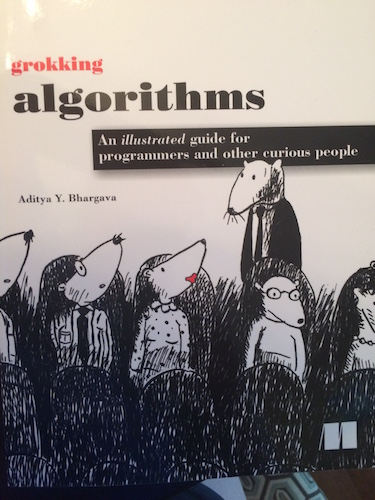

While I've been home, I've been trying to get a little ahead and learn about Rails, since we'll be covering that starting on Monday at Ada. I bought Head First Rails, because I thoroughly enjoyed Head First Ruby so much. Alas, my cats did not appreciate my studying effort. See the above picture for proof. Cats are jerks.
As far as the book goes, I unfortunately didn't make nearly as much progress as I'd hoped, as it's super outdated. A lot of the commands don't even work anymore, including how to even start the server. I view this as a lesson to read the reviews, rather than just go by what I've thought of previous books from the same series. Thankfully, I had another book to keep me busy.
In addition to learning about Ruby, Rails, and JavaScript, the curriculum at Ada covers CS Fundamentals, so I was happy to find an algorithm book I really like - Grokking Algorithms. Plus, it must not taste as good as my Rails book, since my cats didn't eat any of it.
The book covers quite a bit of information in a really friendly format, including entertaining pictures. The first few chapters, which cover subjects like Big-O notation, selection sort, and recursion, are things we've already covered in Ada, so it's an awesome way to dig deeper and make sure I really understand those concepts. This is going to be my travel reading for my plane rides and layover times tomorrow, and I'm looking forward to it!